Day 1 — Emergency Medicine
Press a topic button to open the full high-yield clinical review.
1. ABCDE Approach
Universal first approach to an unstable patient.
Definition & exam principle
ABCDE is a structured primary assessment designed to identify immediately reversible life threats. Treat the problem as soon as you identify it; do not finish the whole survey first.
A — Airway
- Ask if the patient can speak clearly; inability to speak normally can indicate airway compromise.
- Look/listen for stridor, gurgling, snoring, foreign body, facial/neck trauma, blood/vomit, soot, hoarseness.
- Immediate actions may include positioning, suction, visible foreign-body removal, airway adjuncts, bag-mask ventilation, and definitive airway if needed.
- Trauma: maintain cervical-spine protection while managing the airway.
B — Breathing
- Assess RR, SpO₂, chest expansion, respiratory effort, breath sounds, cyanosis and tracheal position.
- Life threats: tension pneumothorax, massive hemothorax, severe asthma, pulmonary edema, severe hypoxemia.
- Tension pneumothorax is a clinical emergency: decompress immediately; do not delay for CXR.
C — Circulation
- HR, BP, pulses, capillary refill, skin temperature, JVP, ECG and major bleeding.
- Control catastrophic external hemorrhage immediately.
- Obtain IV/IO access, send relevant labs/crossmatch, and resuscitate according to the cause.
- Normal BP does not exclude early shock.
D — Disability / E — Exposure
- D: AVPU/GCS, pupils, focal deficit, seizures, bedside glucose.
- E: expose sufficiently to find rash, bleeding, burns, trauma, infection source; maintain dignity and prevent hypothermia.
🔥 Must memorize
Airway → Breathing → Circulation → Brain → Body
Find a life threat → treat it → continue ABCDE.
Common wrong-answer traps
- CT brain before checking glucose in a confused unstable patient.
- Chest X-ray before treating tension pneumothorax.
- Ignoring C-spine precautions in trauma.
- Completing the entire exam before intervening.
Don't confuse with
Primary survey = immediate life threats. Secondary survey = detailed head-to-toe examination after stabilization.
🧭 ABCDE Approach Algorithm
Step-by-step clinical review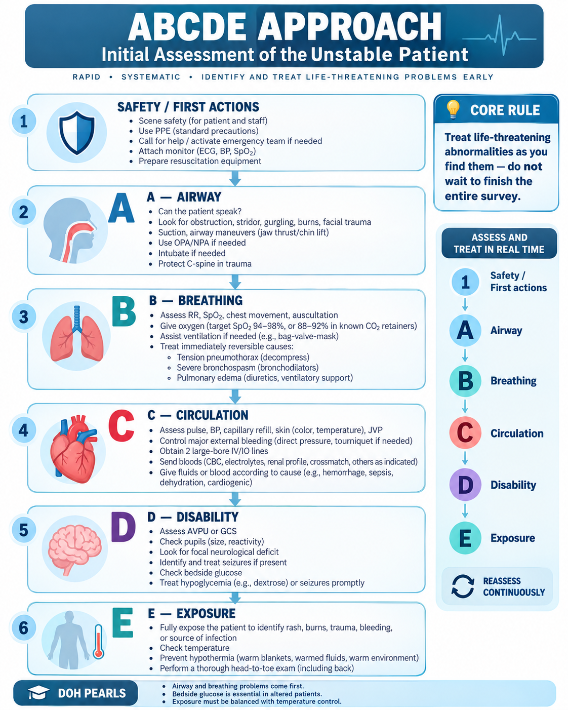
2. Shock
Recognize the type from the vignette and know the first priorities.
Definition
Shock is inadequate tissue perfusion causing cellular hypoxia and organ dysfunction. Hypotension is common but may be absent early.
Compare the 4 major shock patterns
| Type | Classic clues | JVP / lungs | Immediate priorities |
|---|---|---|---|
| Hypovolemic | Hemorrhage, vomiting/diarrhea, dehydration; tachycardia, cool clammy skin | Low JVP, usually clear lungs | Stop losses/bleeding; crystalloid for nonhemorrhagic loss; blood-based resuscitation for major hemorrhage |
| Cardiogenic | MI, severe HF, myocarditis; chest pain, cool skin | Raised JVP, crackles/pulmonary edema | Treat cardiac cause; avoid indiscriminate large fluid boluses; vasoactive support if needed |
| Distributive | Sepsis, anaphylaxis, neurogenic; warm extremities may occur early | Variable | Fluids + cause-specific treatment ± vasopressor |
| Obstructive | Massive PE, tension pneumothorax, tamponade | Often raised JVP; lungs depend on cause | Relieve obstruction urgently |
Clinical signs of impaired perfusion
- Altered mental status
- Oliguria
- Tachycardia
- Cool/mottled peripheries, except early distributive shock may be warm
- Prolonged capillary refill
- Elevated lactate can support hypoperfusion but is not specific.
General initial approach
- ABCDE, monitoring, ECG, IV/IO access.
- Oxygen if hypoxemic.
- Identify the cause and use cause-specific resuscitation.
- Repeated reassessment is essential.
Pattern shortcuts
Dry + flat neck veins → hypovolemia.
Wet lungs + high JVP → cardiogenic.
Warm + infection → septic/distributive.
High JVP + sudden collapse → obstructive until proven otherwise.
Traps
- Normal BP = no shock ❌
- Large fluid bolus for every shock type ❌
- Missing PE/tamponade/tension PTX in sudden deterioration ❌
Academic depth — bedside hemodynamics
| Pattern | Preload/JVP | Lungs | Typical physiology | Useful bedside clue |
|---|---|---|---|---|
| Hypovolemic | Low | Usually clear | ↓ preload → ↓ stroke volume/CO; compensatory ↑ SVR | Small/collapsible IVC, hyperdynamic LV may support the diagnosis |
| Cardiogenic | Often high | Crackles/B-lines common | Primary pump failure → ↓ CO; SVR often rises | Reduced LV function or mechanical complication on echo |
| Distributive | Variable | Often clear early | Marked vasodilation → ↓ SVR; CO may be high early | Warm extremities, bounding pulse, wide pulse pressure early |
| Obstructive | Often high | Depends on cause | Mechanical block to filling/outflow → ↓ CO | RV strain (PE), pericardial effusion/collapse (tamponade), absent lung sliding (PTX) |
POCUS findings support—but do not replace—the clinical picture. A single IVC measurement should not be used alone to decide fluid responsiveness.
Cause-directed management details
- Hemorrhagic shock: control bleeding immediately; activate a major-hemorrhage/massive-transfusion pathway when indicated. Avoid replacing ongoing major blood loss with liters of crystalloid.
- Nonhemorrhagic hypovolemia: balanced isotonic crystalloid is appropriate, with repeated assessment of perfusion and ongoing losses.
- Cardiogenic shock: treat the cause (e.g., urgent reperfusion for MI, rhythm correction, mechanical complication). Use fluids cautiously. Norepinephrine is commonly used when severe hypotension requires pressure support; an inotrope such as dobutamine may be considered when low cardiac output persists after perfusion pressure is supported.
- Obstructive shock: tension pneumothorax → immediate decompression; tamponade → urgent drainage; high-risk PE → reperfusion strategy when appropriate.
Dynamic reassessment — more useful than a single number
Follow mental status, capillary refill, urine output, BP/MAP, lactate trend, skin perfusion and bedside ultrasound. A falling lactate can support improving perfusion, but lactate is not specific for shock and should never be interpreted in isolation.
Higher-level traps
- Normal BP does not exclude shock. Compensated shock may present with tachycardia, cool skin, oliguria or altered mentation before hypotension appears.
- Do not give the same fluid strategy to every shock state. Large indiscriminate boluses can worsen cardiogenic shock and some obstructive states.
- Raised JVP + shock should make you actively think cardiogenic or obstructive shock rather than reflexively giving more fluid.
🧭 Shock Algorithm
Step-by-step clinical review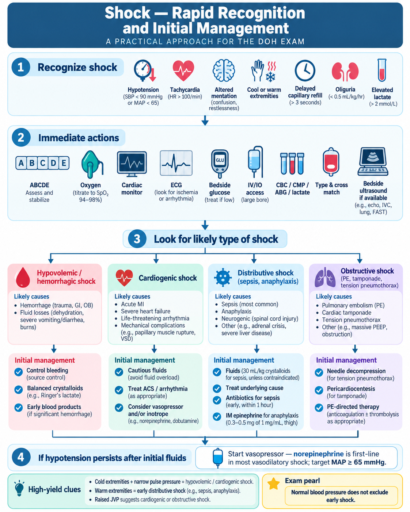
3. Sepsis & Septic Shock
Current 2026 Surviving Sepsis Campaign principles.
Recognition
Sepsis is life-threatening organ dysfunction caused by a dysregulated response to infection. Sepsis is a clinical diagnosis; no single biomarker rules it in or out.
- Possible clues: hypotension, tachypnea, altered mentation, oliguria, AKI, hypoxemia, thrombocytopenia, rising bilirubin, lactate elevation.
- Blood cultures: obtain as soon as possible and ideally before antimicrobials, provided this does not meaningfully delay treatment.
- Measure lactate in suspected sepsis/septic shock.
Antibiotics
- Septic shock / probable or definite sepsis: antimicrobials immediately, ideally within 1 hour of recognition.
- Possible sepsis without shock: rapid diagnostic assessment; if infection concern persists, antibiotics within 3 hours.
- Use local antibiogram/source/risk factors to select empiric therapy; de-escalate when cultures clarify the diagnosis.
Fluids
- Crystalloids are first-line; balanced crystalloids are generally preferred over 0.9% saline during initial resuscitation.
- For sepsis-induced hypoperfusion or septic shock, 2026 SSC suggests at least 30 mL/kg IV crystalloid in the first 3 hours, individualized to the patient.
- Reassess frequently to avoid under- or over-resuscitation, especially in HF/renal disease.
Vasopressors
- Norepinephrine = first-line vasopressor.
- Initial MAP target: 65 mmHg.
- If norepinephrine dose escalates, vasopressin may be added; epinephrine may be added if MAP remains inadequate.
- In unstable septic shock, vasopressors may be started concurrently with fluids; peripheral initiation can be appropriate rather than delaying for central access.
💊 Key Doses / Numbers
≥30 mL/kg IV within the first 3 h for sepsis-induced hypoperfusion/septic shock, then reassess65 mmHg1 hourSource control
Drain abscesses, remove infected devices, decompress obstructed systems, and address the anatomic source as soon as feasible.
🔥 Must memorize
Sepsis + hypoperfusion → crystalloid + antibiotics + source control.
Persistent hypotension → norepinephrine.
MAP → 65 mmHg.
Exam traps
- Waiting for every culture before treating septic shock.
- Using qSOFA as the only screening tool.
- Giving endless fluids without reassessment.
- Forgetting source control.
Important nuance
Fluid volume is not a fixed “blind bolus.” The guideline suggests 30 mL/kg initially for sepsis-induced hypoperfusion/septic shock, but patient factors and response must guide ongoing resuscitation.
📊 SOFA & qSOFA
Open the score tables and quick qSOFA calculatorqSOFA — bedside risk prompt
| Criterion | Point |
|---|---|
| Respiratory rate ≥ 22/min | 1 |
| Altered mentation (GCS < 15) | 1 |
| Systolic BP ≤ 100 mmHg | 1 |
Exam pearl: qSOFA is a prognostic bedside prompt, not a stand-alone screening or rule-out test for sepsis.
SOFA — organ dysfunction domains
| System | Variable |
|---|---|
| Respiratory | PaO₂/FiO₂ ratio |
| Coagulation | Platelet count |
| Liver | Bilirubin |
| Cardiovascular | MAP / vasopressor requirement |
| CNS | Glasgow Coma Scale |
| Renal | Creatinine or urine output |
Sepsis-3 concept: an acute increase in SOFA score of ≥2 points in the setting of suspected infection supports organ dysfunction consistent with sepsis.
The full SOFA score requires exact clinical/laboratory values and is more detailed than qSOFA. Use the table as a memory aid; calculate formally when actual values are provided.
Academic depth — Sepsis-3, SOFA and screening
- Sepsis: suspected/confirmed infection plus life-threatening organ dysfunction from a dysregulated host response.
- An acute SOFA increase ≥2 supports clinically important organ dysfunction in the Sepsis-3 framework.
- qSOFA is not a stand-alone sepsis screening or rule-out test. Current guidance favors broader early-warning/screening tools plus clinical judgment.
- Possible organ dysfunction includes encephalopathy, hypoxemia, AKI/oliguria, thrombocytopenia/coagulopathy, hyperbilirubinemia, hypotension or elevated lactate.
Diagnostic work-up without delaying treatment
- Blood cultures as soon as possible and ideally before antibiotics when this does not meaningfully delay therapy.
- Lactate, CBC, renal/liver function, electrolytes, coagulation profile, urinalysis and source-directed cultures/imaging as clinically indicated.
- Procalcitonin should not be required to decide whether to start antibiotics when clinical suspicion is significant.
- Think actively about a source that needs a procedure: obstructed infected urinary tract, abscess, infected line/device, ischemic/infected bowel, necrotizing soft-tissue infection, empyema, etc.
Perfusion reassessment after the initial bolus
Do not continue fluids automatically. Reassess capillary refill, mentation, urine output, MAP, lactate trend and dynamic fluid responsiveness. In patients with HF/CKD or evidence of fluid intolerance, early vasopressor support may be safer than repeated large boluses.
Source control & antimicrobial stewardship
- When a definite anatomical source requires intervention, early source control is preferred—ideally within about 6 hours when feasible.
- Empiric coverage should reflect source, local resistance, prior cultures/colonization, recent broad-spectrum antibiotics and healthcare exposure.
- Reassess daily and de-escalate once microbiology and clinical data permit.
Higher-level traps
- Do not wait for a positive culture, procalcitonin result or CT scan before treating septic shock.
- A lactate elevation is not synonymous with septic shock; interpret it with perfusion and the overall clinical picture.
- Persistent hypotension after appropriate initial fluid → norepinephrine, not endless fluid.
- Antibiotics alone are insufficient when an infected obstructed or necrotic source needs drainage/debridement.
🧭 Sepsis & Septic Shock Algorithm
Step-by-step clinical review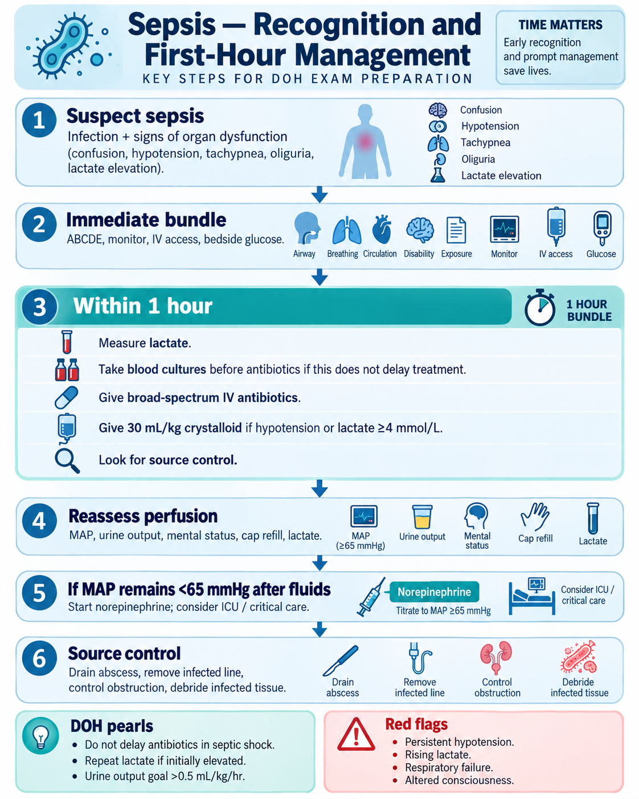
4. Anaphylaxis
Do not delay epinephrine.
Classic presentation
Rapid systemic hypersensitivity reaction after a likely trigger, with airway, breathing, circulatory and/or skin/mucosal involvement. Severe bronchospasm or hypotension can occur even if rash is absent.
First-line treatment
IM epinephrine in the mid-anterolateral thigh.
0.01 mg/kg of 1 mg/mL (1:1000), max 0.5 mg adult
Repeat every 5–15 minutes if symptoms persist.
💊 Key Doses / Numbers
0.01 mg/kg of 1 mg/mL, adult max 0.5 mgEvery 5–15 min if neededSupportive treatment
- Call for help; ABC assessment.
- Position appropriately: generally supine unless respiratory distress/vomiting requires modification.
- High-flow oxygen if needed.
- Large-bore IV access; rapid isotonic crystalloid for hypotension.
- Inhaled beta-agonist for persistent bronchospasm.
- Antihistamines/corticosteroids are adjunctive; they do not replace epinephrine.
Biphasic reaction
Symptoms can recur after initial resolution without re-exposure. Observation duration depends on severity, treatment requirements, comorbidities and access to emergency care.
🔥 Memory line
Anaphylaxis → IM epinephrine first.
Traps
- Antihistamine before epinephrine.
- Waiting for hypotension.
- Routine IV epinephrine bolus in a non-monitored setting.
- Standing/walking a hypotensive patient.
🧭 Anaphylaxis Algorithm
Step-by-step clinical review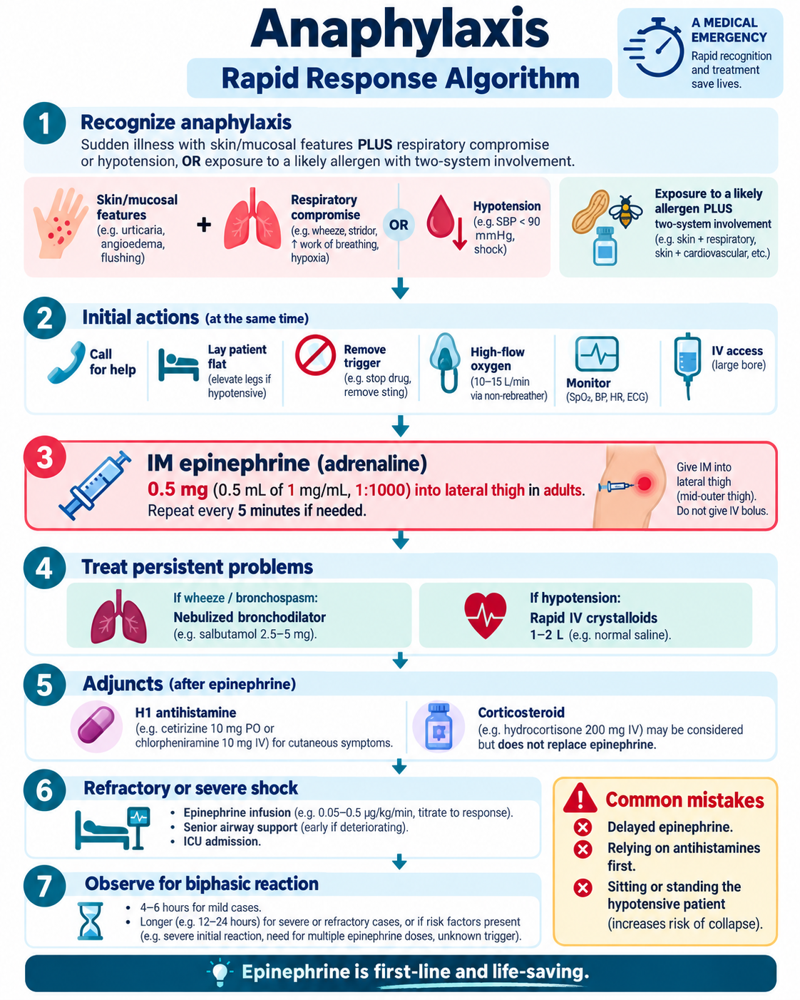
5. Altered Mental Status / Hypoglycemia
Prioritize reversible causes.
Immediate approach
- ABCDE and vitals.
- Bedside glucose early.
- Assess oxygenation, temperature, medications/toxins, infection, trauma, seizures and focal neurologic deficits.
- Consider opioid toxicity, stroke, sepsis, CO exposure, electrolyte disorders and endocrine emergencies depending on context.
Hypoglycemia clues
Autonomic: sweating, tremor, palpitations, hunger. Neuroglycopenic: confusion, behavior change, seizure, focal-like deficit, coma.
Treatment
- Alert and able to swallow: rapid oral glucose/carbohydrate, then recheck.
- Severe/unconscious: IV dextrose when IV access is available.
- No IV access: glucagon is an option.
- Recheck glucose after treatment and give longer-acting carbohydrate when appropriate.
- Identify the cause: insulin/sulfonylurea, missed food, alcohol, sepsis, renal/hepatic failure, adrenal insufficiency.
💊 Key Doses / Numbers
15 g fast-acting carbohydrate, recheck in 15 min🔥 Must memorize
Altered mental status → glucose early.
Traps
- CT first before checking glucose.
- Failing to recheck after treatment.
- Missing prolonged/recurrent hypoglycemia from sulfonylureas or renal impairment.
🧭 AMS & Hypoglycemia Algorithm
Step-by-step clinical review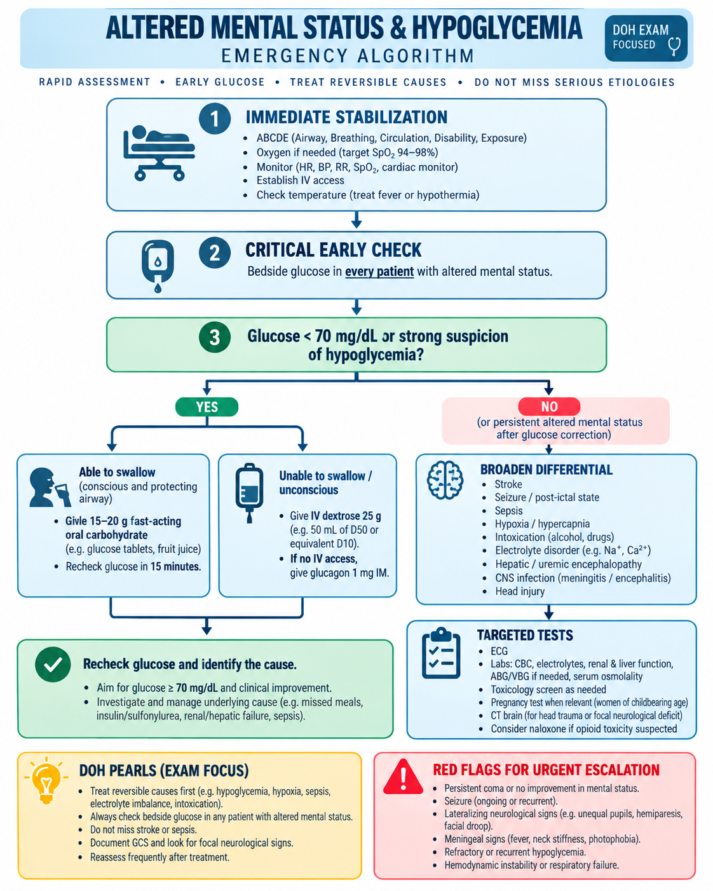
6. Heat Illness
Heat stroke is defined by CNS dysfunction, not by dry skin.
Heat exhaustion vs heat stroke
| Heat exhaustion | Heat stroke | |
|---|---|---|
| Mental status | No severe CNS dysfunction | Delirium, confusion, seizure or coma |
| Temperature | Elevated | Marked hyperthermia, commonly around ≥40°C but clinical diagnosis depends on CNS dysfunction and heat exposure |
| Sweating | Usually present | May be present or absent |
| Treatment | Cooling + oral/IV fluid as appropriate | Immediate rapid active cooling + ABC resuscitation |
Heat stroke complications
- Rhabdomyolysis
- AKI
- Hepatic injury
- Coagulopathy/DIC
- Electrolyte abnormalities
- Arrhythmia/shock
Management priorities
- ABCDE.
- Rapid active cooling; do not wait for lab results.
- Monitor core temperature, renal function, CK, electrolytes, coagulation and liver injury as indicated.
Memory
Heat stroke = heat exposure + hyperthermia + CNS dysfunction.
Trap
Dry skin is not required; exertional heat stroke often has sweating.
🧭 Heat Illness Algorithm
Step-by-step clinical review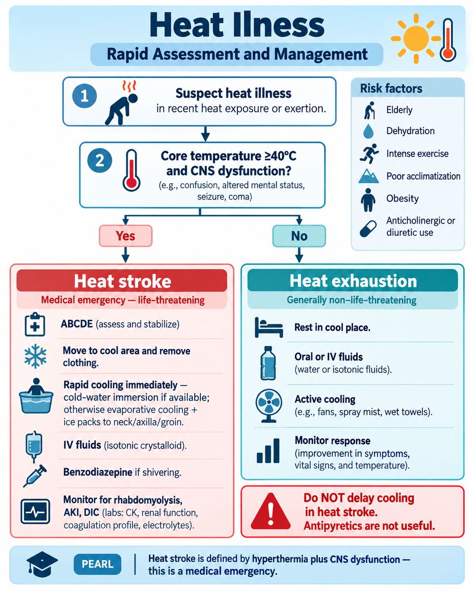
7. Burns
Airway, burn depth/TBSA, fluid resuscitation, and complications.
Initial approach
- Stop the burning process; remove hot/wet clothing and constricting jewelry if safe.
- ABCDE.
- Assess burn depth and TBSA.
- Cover with clean dry material after cooling; avoid hypothermia.
Inhalation injury
Clues: enclosed-space fire, facial burns, singed nasal hair, soot, carbonaceous sputum, hoarseness, stridor, respiratory distress.
Airway edema can progress rapidly → early airway planning.
TBSA essentials
- Rule of Nines is a rapid adult estimate.
- Patient palm including fingers ≈ 1% TBSA for scattered small burns.
- Superficial/first-degree erythema is generally not included in TBSA used for formal fluid resuscitation.
Burn fluid formulas — exam vs current guideline
Classic exam formula (Parkland): 4 mL × kg × %TBSA lactated Ringer's in first 24 h; half in first 8 h from time of burn, remainder over next 16 h.
Current ABA 2024 adult burn-shock guidance: for adults with burns ≥20% TBSA, consider starting around 2 mL/kg/%TBSA to reduce excessive fluid volumes, then titrate to clinical response.
For exam questions, follow the formula specifically requested; if asked contemporary management, know the ABA update.
💊 Key Doses / Numbers
4 mL × kg × %TBSA over 24 h8 h from burn time; remainder over next 16 h2 mL/kg/%TBSA for ≥20% TBSA, then titrateMonitoring
Urine output and overall clinical response guide titration. Watch for under-resuscitation and “fluid creep.”
Red flags / burn-center-type concerns
- Airway/inhalation injury
- Large TBSA burns
- Electrical or chemical burns
- Circumferential burns
- Face, hands, genitalia/perineum, major joints
- Associated trauma or significant comorbidity
Memory
Facial burn + soot/hoarseness → inhalation injury → early airway.
Don't forget
Electrical injury may cause deep tissue damage, rhabdomyolysis and arrhythmias despite limited skin findings.
Academic depth — burn depth
| Depth | Appearance / sensation | High-yield implication |
|---|---|---|
| Superficial | Red, dry, blanching, painful | Not counted in formal TBSA resuscitation calculations |
| Superficial partial-thickness | Blistered, moist, very painful, blanching | Counted in TBSA; often heals without grafting |
| Deep partial-thickness | Paler/drier, reduced blanching and sensation | Higher risk of scarring and graft requirement |
| Full-thickness | Leathery/waxy/charred, nonblanching, reduced or absent pin-prick sensation | Requires burn-specialist assessment; grafting often needed |
Smoke inhalation, carbon monoxide & cyanide
- Upper-airway thermal injury: hoarseness, stridor, facial/oropharyngeal burns, progressive edema → consider early definitive airway before swelling makes intubation difficult.
- Carbon monoxide: standard pulse oximetry can look normal. Diagnose with co-oximetry/carboxyhemoglobin in the appropriate exposure and give high-concentration oxygen while evaluating.
- Cyanide toxicity: consider after an enclosed-space fire with severe lactic acidosis, cardiovascular collapse or altered consciousness. Treatment is protocol/toxicology dependent; hydroxocobalamin is commonly used when strongly suspected.
Fluid resuscitation — how to use the formulas correctly
- The calculated volume is a starting estimate, not a fixed prescription.
- Adult urine-output target is commonly about 0.5 mL/kg/hr; adjust fluids to perfusion and urine output while avoiding fluid creep.
- Remember that the first 8-hour clock starts at the time of injury, not hospital arrival.
- Electrical injury, rhabdomyolysis and special populations may require individualized targets and specialist guidance.
Burn-center consultation / transfer clues
- Full-thickness burns, partial-thickness burns ≥10% TBSA, deep burns involving face/hands/feet/genitalia/perineum/major joints.
- Suspected inhalation injury, high-voltage electrical injury, chemical injury, significant comorbidity, associated trauma or poorly controlled pain.
Higher-level traps
- Do not use ice directly on significant burns; it can worsen tissue injury and hypothermia.
- Do not rely on normal pulse oximetry to exclude carbon-monoxide poisoning.
- Routine prophylactic systemic antibiotics are not recommended for uncomplicated acute burns.
- Circumferential full-thickness burns compromising limb perfusion or ventilation may require escharotomy.
🧭 Burns Algorithm
Step-by-step clinical review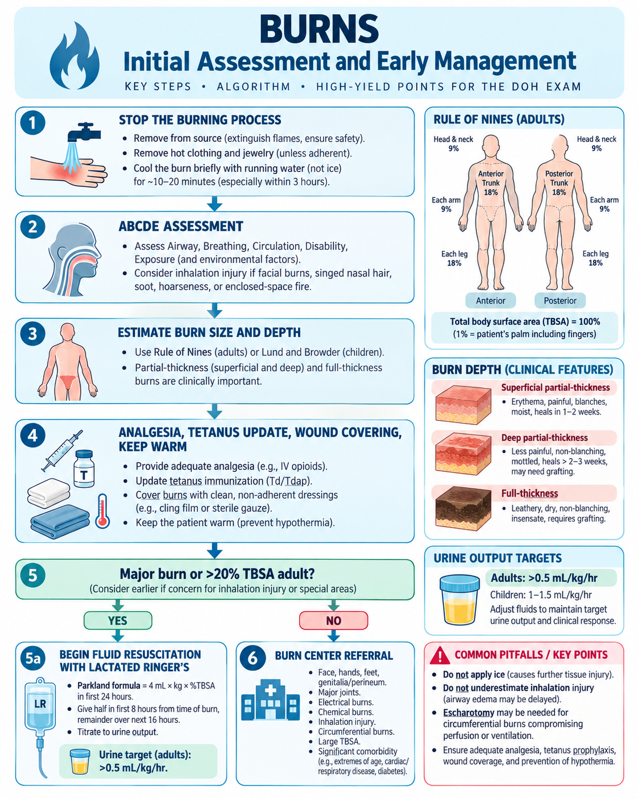
8. Trauma Basics
Primary survey, hemorrhage control and secondary survey.
Primary survey
- A: Airway with cervical-spine protection.
- B: Breathing; immediately treat chest life threats.
- C: Circulation with hemorrhage control.
- D: Disability — GCS/pupils/neurologic status.
- E: Exposure/environment; prevent hypothermia.
Catastrophic hemorrhage
- Direct pressure and appropriate hemorrhage-control measures.
- In major hemorrhage, prioritize blood-product-based resuscitation and definitive bleeding control rather than large-volume crystalloid.
- Consider pelvic bleeding, chest/abdomen/retroperitoneum and long-bone sources when external bleeding is absent.
Chest trauma life threats
- Tension pneumothorax
- Massive hemothorax
- Open pneumothorax
- Cardiac tamponade
Secondary survey
After immediate threats are controlled: AMPLE history, head-to-toe exam, focused imaging/labs, reassessment and definitive disposition.
Memory
Primary survey saves life; secondary survey finds the rest.
Traps
- Detailed history before stabilizing ABCs.
- Sending an unstable patient to CT before addressing shock.
- Forgetting hypothermia prevention.
- Missing repeated reassessment after an intervention.
Academic depth — xABCDE and damage-control priorities
- Many trauma systems use xABCDE: control exsanguinating external hemorrhage before the traditional airway step.
- Primary survey and resuscitation occur simultaneously. Treat each immediate threat when found rather than waiting to finish the survey.
- In major hemorrhage, early definitive bleeding control and a major-hemorrhage / massive-transfusion protocol are more important than repeated crystalloid boluses.
Hemorrhagic shock & resuscitation strategy
- Use direct pressure, wound packing/hemostatic dressing and tourniquet for appropriate life-threatening extremity hemorrhage.
- Balanced blood-component resuscitation is commonly used in major hemorrhage; many protocols approximate a 1:1:1 strategy for RBC:plasma:platelets early in massive transfusion.
- Permissive hypotension may be used in selected actively bleeding adults until hemorrhage control, but it is generally not appropriate when traumatic brain injury requires preservation of cerebral perfusion; pregnancy and other special states also need individualized targets.
- Prevent hypothermia aggressively: warmed blood/fluids, blankets and environmental warming.
💊 Tranexamic acid (TXA)
within 3 hours of injury1 g IV over 10 min, then 1 g IV over 8 hFollow the trauma system/local protocol. Benefit is time-sensitive; do not wait for viscoelastic-test results when TXA is otherwise indicated.
eFAST — what it can and cannot do
- Rapid bedside assessment for pericardial fluid, intraperitoneal free fluid and pneumothorax/hemothorax depending on the protocol.
- A positive eFAST in an unstable patient can accelerate definitive intervention.
- A negative eFAST does not exclude major injury, including retroperitoneal bleeding, early/limited intraperitoneal bleeding or many hollow-viscus injuries.
Chest threats that should be treated during the primary survey
- Tension pneumothorax: decompress immediately when clinically suspected in an unstable patient—do not wait for CT.
- Open pneumothorax: vented/appropriate occlusive dressing plus definitive chest drainage according to trauma protocol.
- Massive hemothorax: chest tube + hemorrhage resuscitation + urgent surgical evaluation when output/physiology warrants.
- Tamponade: shock + elevated JVP; POCUS can support rapid recognition.
Higher-level traps
- Do not send an unstable patient to CT simply because the diagnosis is uncertain.
- Do not let a negative FAST falsely reassure you when physiology still suggests hemorrhage.
- Do not normalize BP aggressively before hemorrhage control in every bleeding patient; context—including TBI—changes the target.
- Hypothermia, acidosis and coagulopathy amplify one another; prevention is part of resuscitation, not an afterthought.
🧭 Trauma Algorithm
Step-by-step clinical review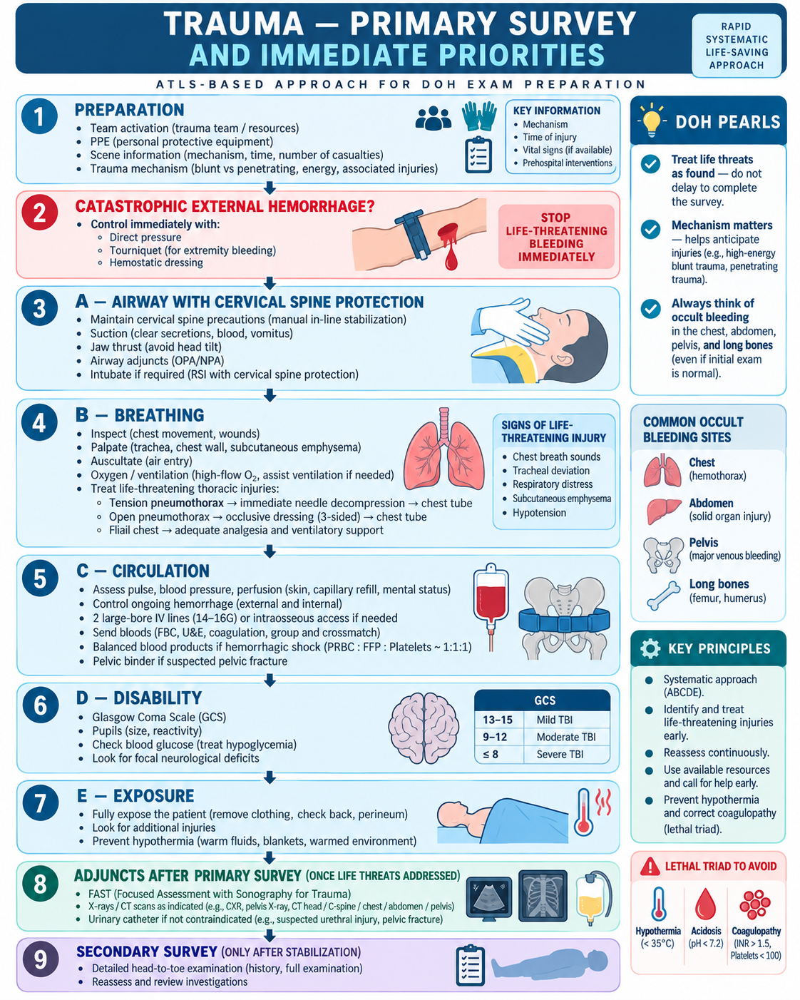
9. Cardiovascular Emergencies
Recognition of immediately dangerous cardiovascular syndromes and the safest first action.
Core principle
These conditions often present as chest pain, dyspnea, syncope or shock and may initially resemble ACS. The exam-level skill is to recognize the dangerous pattern and choose the action that prevents harm.
Acute aortic syndrome / aortic dissection
- Classic pattern: abrupt severe chest or back pain, often maximal at onset; tearing/ripping quality is helpful but not required.
- Red flags: pulse deficit or inter-arm BP difference, focal neurologic deficit, syncope, new aortic-regurgitation murmur, shock, known aortic disease or connective-tissue disorder.
- Imaging: CTA is commonly used in a stable patient; TEE is useful when unstable or when CT is impractical.
- Immediate management: analgesia plus anti-impulse therapy. IV beta-blockade is generally first when not contraindicated, followed by vasodilator therapy if BP remains high.
- Key target: SBP <120 mmHg or the lowest BP that preserves organ perfusion; HR about 60–80/min.
- Type A (ascending aorta involvement) is a surgical emergency.
🔥 Safety trap: dissection vs ACS
Abrupt tearing/back-radiating pain + asymmetric pulses/BP or neurologic findings = think dissection before giving thrombolysis or full anticoagulation. Antithrombotic treatment can be catastrophic if acute aortic dissection is the true diagnosis.
Cardiac tamponade
- Pattern: hypotension/shock + elevated JVP + tachycardia; muffled heart sounds may occur, but the complete Beck triad is not always present.
- Pulsus paradoxus: exaggerated inspiratory fall in systolic BP can be a clue.
- POCUS/echo: pericardial effusion, right-atrial/right-ventricular diastolic collapse, plethoric IVC.
- Unstable tamponade: urgent pericardial drainage is the definitive life-saving treatment.
- Temporary supportive fluids may help selected preload-dependent patients while definitive drainage is arranged, but should not delay it.
High-risk pulmonary embolism
- Red flags: sudden dyspnea/chest pain, syncope, hypoxemia, hypotension or shock, recent surgery/immobility, prior VTE.
- In an unstable patient who cannot safely go to CT, bedside echo may show RV dilation/strain and support urgent management.
- High-risk PE = hemodynamic instability. Reperfusion therapy may be required when there is shock or persistent hypotension and no prohibitive contraindication.
- Do not delay stabilization while pursuing a perfect diagnostic work-up in a crashing patient.
Acute cardiogenic pulmonary edema
- Severe dyspnea, hypoxemia, crackles, diaphoresis; BP may be very high or very low depending on the cause.
- Support oxygenation/ventilation as needed; non-invasive ventilation can be useful in appropriate patients.
- Nitrates may be useful in hypertensive pulmonary edema when there is no contraindication.
- Look for the trigger: ACS, acute MR, hypertensive crisis, arrhythmia, fluid overload.
Mechanical complications after MI
| Complication | Classic clue |
|---|---|
| Papillary muscle rupture | Acute severe MR → sudden pulmonary edema/shock; new systolic murmur may be soft if shock is profound |
| Ventricular septal rupture | New harsh holosystolic murmur ± thrill + cardiogenic shock |
| Free-wall rupture | Sudden collapse, PEA, hemopericardium/tamponade |
Memory: recent MI + sudden new murmur, pulmonary edema or shock = think mechanical complication.
Don't confuse with
- Tamponade: obstructive shock, high JVP, usually clear lungs.
- Cardiogenic pulmonary edema: crackles and pulmonary congestion.
- Massive PE: obstructive shock + RV strain, often clear lungs.
- Aortic dissection: abrupt pain + pulse/BP/neuro clues.
Memory lines
Dissection: sudden tearing/back pain + asymmetry = protect the aorta before treating “ACS.”
Tamponade: shock + high JVP + clear lungs = think compressed heart.
Post-MI rupture: new murmur + shock = mechanical complication until proven otherwise.
🧭 Cardiovascular Emergencies Algorithm
Pattern → immediate priority → major trap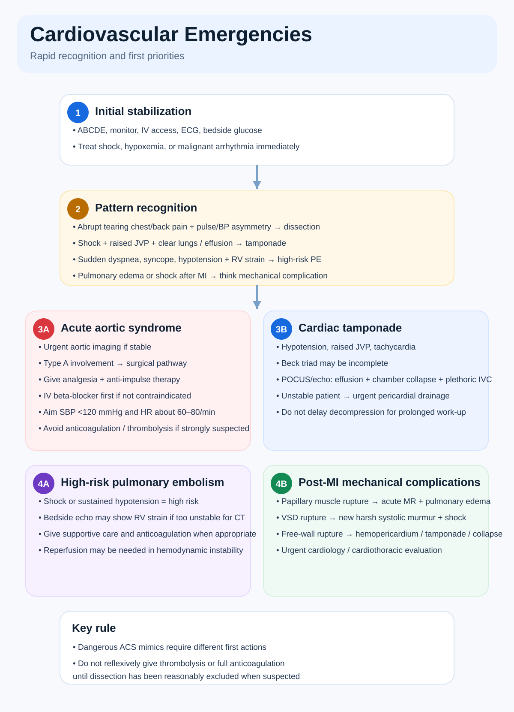
10. Toxidromes & Hyperthermia
Pattern recognition for poison syndromes, serotonin syndrome, neuroleptic malignant syndrome and malignant hyperthermia.
Core principle
In the emergency setting, the safest first move is usually to recognize the syndrome, stop the trigger, support ABCs, control temperature, and use the specific antidote when indicated. Questions often test whether you can distinguish serotonin syndrome, neuroleptic malignant syndrome (NMS), anticholinergic toxicity, cholinergic toxicity, opioid toxicity, sympathomimetic toxicity, and malignant hyperthermia.
High-yield toxidrome map
| Syndrome | Typical clues | Key first step |
|---|---|---|
| Opioid | Miosis, respiratory depression, CNS depression | Airway/ventilation + naloxone |
| Sympathomimetic | Agitation, tachycardia, hypertension, diaphoresis, mydriasis | Benzodiazepines, cooling, supportive care |
| Anticholinergic | Hot, dry skin; urinary retention; delirium; mydriasis; ileus | Supportive care, cooling, ECG review |
| Cholinergic | Salivation, lacrimation, urination, diarrhea, bronchorrhea, miosis, fasciculations | Atropine + airway support; pralidoxime when indicated |
| Serotonin syndrome | Clonus, hyperreflexia, agitation, diaphoresis, diarrhea, fever | Stop serotonergic drugs; benzodiazepines; consider cyproheptadine |
| NMS | Lead-pipe rigidity, bradyreflexia, hyperthermia, autonomic instability after dopamine blockade | Stop causative drug; supportive care; consider dantrolene/bromocriptine |
| Malignant hyperthermia | During/after anesthesia: rapidly rising ETCO₂, rigidity, hyperthermia, hyperkalemia | Stop trigger; dantrolene; aggressive cooling/resuscitation |
🔥 Serotonin syndrome vs NMS
- Serotonin syndrome: usually rapid onset (often within hours), clonus + hyperreflexia, tremor, GI symptoms, diaphoresis.
- NMS: usually more gradual, lead-pipe rigidity, hyporeflexia/bradyreflexia, exposure to antipsychotics or dopamine-withdrawal state.
- Management differs: in serotonin syndrome, stop serotonergic drugs and use sedation/supportive care; in NMS, stop the dopamine-blocking agent and escalate supportive treatment.
Malignant hyperthermia
- Triggered by volatile anesthetics or succinylcholine / suxamethonium.
- Exam clues: rapidly rising end-tidal CO₂, generalized rigidity, hyperthermia, acidosis, rhabdomyolysis, hyperkalemia.
- Immediate treatment: stop the trigger, call for help, give
dantrolene, actively cool, hyperventilate with 100% O₂, treat hyperkalemia and arrhythmias, and provide aggressive supportive care. - Do not delay treatment while waiting for confirmatory testing.
Supportive management priorities
- Airway / breathing: respiratory depression, aspiration risk and bronchorrhea may require rapid support.
- Circulation: ECG, IV access, fluids when appropriate, and cause-specific hemodynamic support.
- Temperature control: hyperthermia is dangerous—use active external cooling when indicated.
- Sedation: benzodiazepines are often useful in sympathomimetic toxicity and serotonin syndrome.
- Check glucose and ECG early in undifferentiated altered mental status or overdose.
Classic differentiating clues
- Wet vs dry: cholinergic is usually wet (secretions); anticholinergic is typically dry.
- Pupils: opioids → miosis; sympathomimetic / anticholinergic → mydriasis.
- Bowel sounds: serotonin syndrome often has hyperactive bowels/diarrhea; anticholinergic toxicity often causes ileus and urinary retention.
- Reflexes: hyperreflexia and clonus strongly support serotonin syndrome; diffuse rigidity without clonus suggests NMS.
Key antidotes / specific therapies
Exam traps
- Do not call every febrile rigid patient “NMS” if the stem gives clonus + hyperreflexia + serotonergic drugs.
- Do not treat malignant hyperthermia as simple postoperative fever.
- Do not miss opioid toxicity when pinpoint pupils and hypoventilation are present.
- Do not forget that supportive care is still the foundation even when an antidote exists.
🖼️ Toxidromes Visual Review
High-yield patterns for rapid differentiation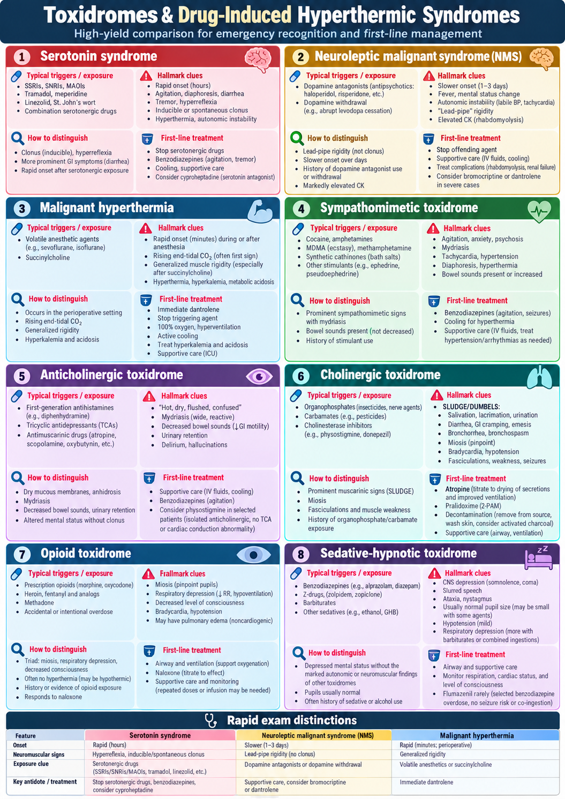
🧭 Toxidromes & Hyperthermia Algorithm
Recognition → first action → specific treatment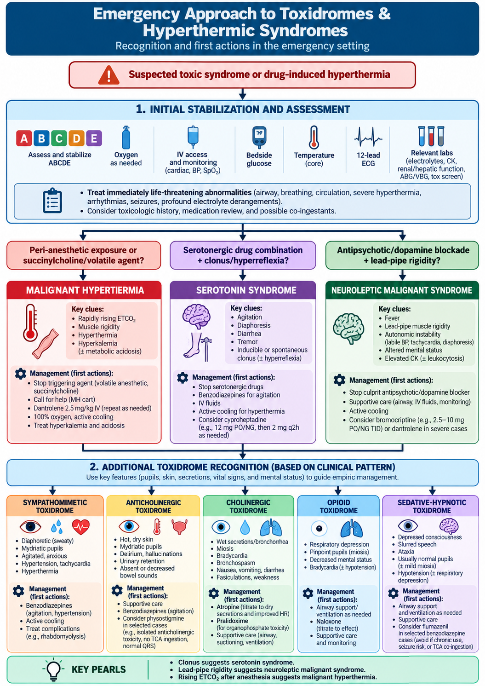
🔥 Day 1 Rapid Review
These should become automatic.